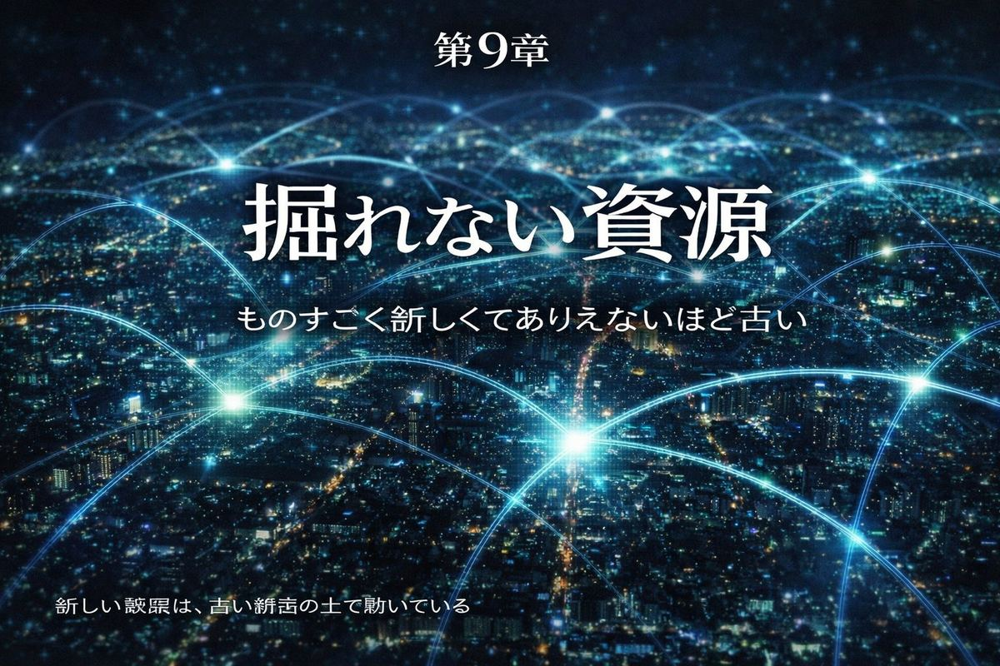
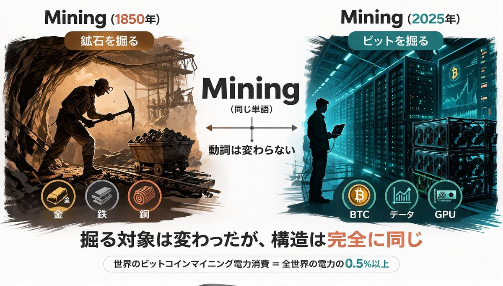
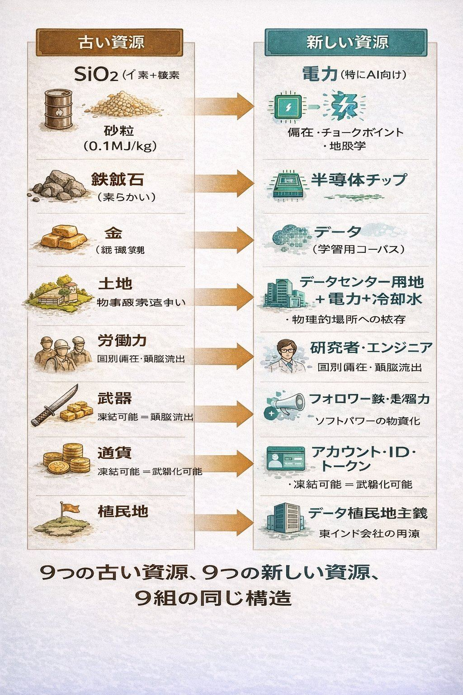
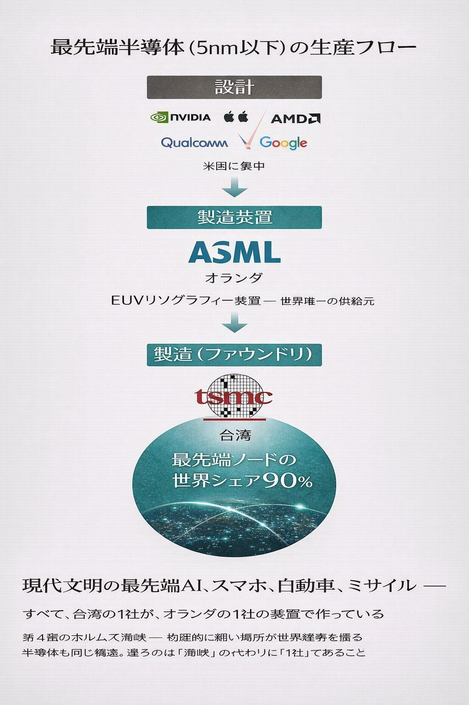
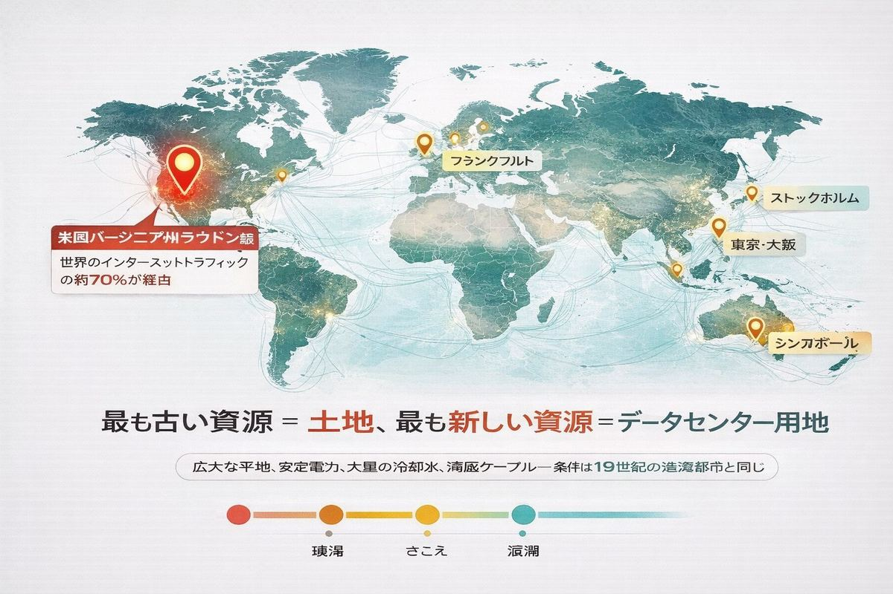
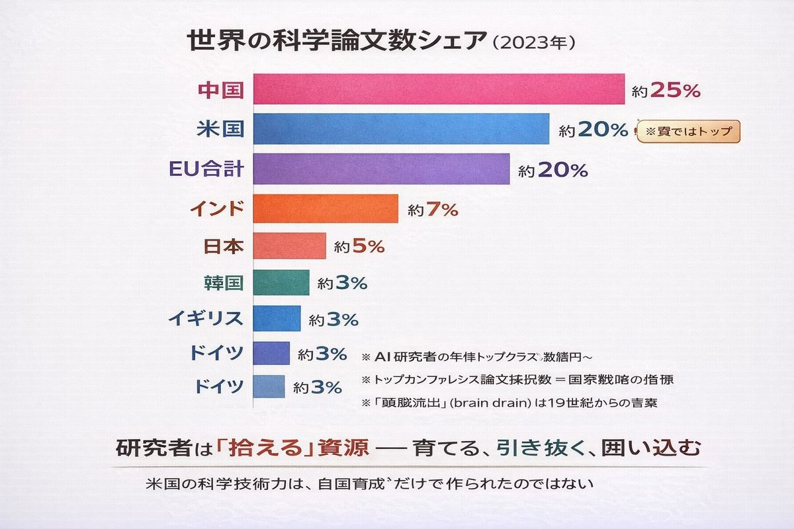
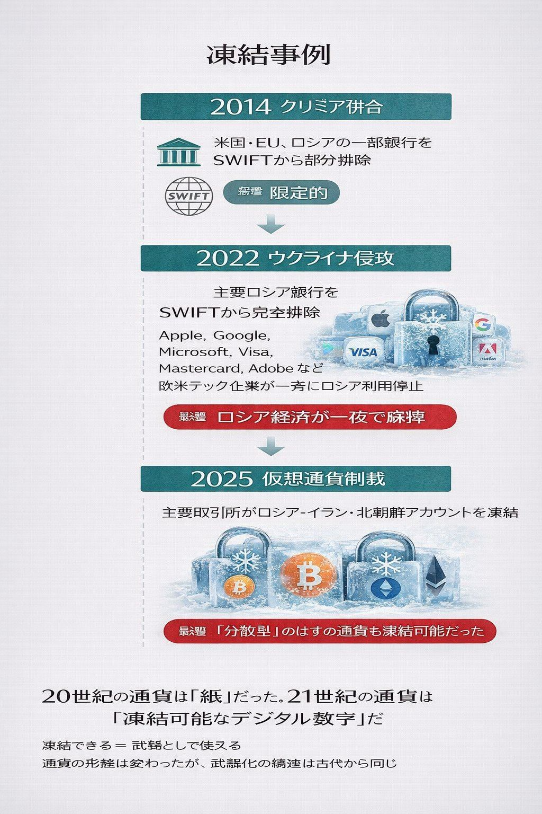

すべての新しさは、過去の再演である。 ── 出典不明（だが歴史を見ればたぶん本当だ）
A. 1〜2種類 B. 5〜6種類 C. 数えるほど多い。しかし構造はすべて同じ
正解はC。
データ。電力。半導体チップ。データセンター用地。研究者。エンジニア。論文。特許。フォロワー数。アカウント。クラウドAPI。学習用コーパス。トークン。スパコンの計算時間──。
21世紀の「新資源」と呼ばれるものを並べると、20を超える。そしてその一つひとつが、ニュースで「次の石油」「次の金」「次の鉄」と呼ばれている。
それぞれの「新しさ」を語るのに、人々は古い資源の比喩を使う。比喩が同じということは、構造が同じだということだ。
本章は、新しい資源の物語が、いかに古い物語の再演であるかを見ていく。
最も象徴的な単語がある。マイニング（mining）。

ビットコインを掘る作業を、人類は「マイニング」と呼んだ。データを集めて分析することも「データマイニング」と呼ぶ。テキストを抽出するのは「テキストマイニング」。鉱山（mine）の動詞形が、デジタル世界の中心的な動詞になっている。
これは偶然ではない。
物理的な金属を取り出すのも、デジタル空間からビットを取り出すのも、構造が同じだからだ。資源の場所を探し、装置を投入し、エネルギーを注ぎ込み、競争相手を出し抜き、産出物を流通させ、利益を独占する。手順が完全に一致している。
もっと言えば、ビットコインのマイニングには物理的に大量の電気と冷却が必要で、世界の電力消費の0.5%以上を占めている。これは「物理的に掘る」のと変わらない。掘る対象がビットなだけだ。
「マイニング」という言葉そのものが、新資源が古い資源の構造で動いていることの証拠だ。
対応表を作ってみる。

| 古い資源 | 新しい資源 | 共通する構造 |
|---|---|---|
| 石油 | 電力（特にAI向け） | 偏在・チョークポイント・地政学 |
| 鉄鉱石 | 半導体チップ | 単一企業/国への依存 |
| 金 | データ（学習用コーパス） | 採掘・精製・所有権争い |
| 土地 | データセンター用地＋電力＋冷却水 | 物理的場所への依存 |
| 労働力 | 研究者・エンジニア | 国別偏在、頭脳流出 |
| 武器 | フォロワー数・影響力 | ソフトパワーの物質化 |
| 通貨 | アカウント・ID・トークン | 凍結可能＝武器化可能 |
| 植民地 | データ植民地主義 | 東インド会社の再演 |
| 海上覇権 | クラウド覇権 | AWS/Azure/GCP |
左の列はすべて、本書の前半で見てきたものだ。砂、鉄、石油、レアアース、日本の事情。これらは「物理的に掘って・運んで・使う」資源だった。
右の列はすべて、ここ20年ほどで「新資源」と呼ばれるようになったものだ。一見、まったく違う種類のものに見える。
しかし、左と右を矢印で結ぶと、構造が完全に対応していることがわかる。1対1で。例外なく。
第4章で見た石油の話を、電力に置き換えると、ほとんど同じ文章が書ける。
石油は世界のエネルギー消費の主役だった。電力は、AIの時代において、新しいエネルギー消費の主役になりつつある。
ChatGPTのような大規模言語モデルを1回訓練するのに、数千万kWhの電力が必要だ。これは数千世帯の年間消費量に相当する。推論（実際にユーザーの質問に答える作業）にも莫大な電力がかかる。MicrosoftやGoogleが「2030年までにカーボンニュートラル」という目標を、AIブームのために断念しつつあるのはこの理由だ。
そして電力にも、石油と同じ「偏在」と「チョークポイント」がある。
電力の地政学は、いま石油の地政学と同じ構造で再現されている。違うのは、原料が「掘り出される」のではなく「発電される」ことだけだ。発電所の偏在は、油田の偏在と機能的に同じだ。
第8章で見た「文明の進歩 ＝ 火の温度を上げる物語」の現代版が、半導体チップだ。

世界の最先端半導体（5nm以下）を作れる企業は、事実上1社しかない。台湾のTSMCだ。そのTSMCに装置を供給できる企業は、事実上1社しかない。オランダのASML（極端紫外線露光装置EUVの独占供給元）だ。
つまり、現代文明のすべての高性能チップは、台湾の1社が、オランダの1社の装置を使って製造している。
これがどれほど異常な集中度か、第4章のチョークポイント論を思い出すといい。ホルムズ海峡を世界の石油の20%が通る。マラッカ海峡を中東→アジアの石油の大半が通る。物理的に細い場所が世界経済を握る、とあの章では書いた。
半導体も同じだ。物理的に細い場所、つまり「TSMCのファウンドリ1社」が、世界のAI・スマホ・自動車・ミサイル・ロケット・医療機器のすべてを握っている。
そして、それを取り巻く米中の争いは、第4章で見た20世紀後半の中東紛争と構造的に瓜二つだ。地理が違うだけ。物質が違うだけ。本質は同じ。
第7章で見た「都市鉱山」の発想は、デジタル世界にも完璧に当てはまる。
データは、誰かが作って、誰かが集めて、誰かが精製し、誰かが所有する。学習用コーパスをめぐっては、すでに大規模な訴訟が始まっている。ニューヨーク・タイムズ、ゲッティイメージズ、レコード会社、出版社、画家、写真家、プログラマー──彼らは皆、自分たちのデータがAIによって「採掘・精製」されたことに対して異議を唱えている。
「データは新しい石油である」というフレーズは、2006年頃に英国の数学者クライブ・ハンビーが言い出した。以来、この比喩は無数に繰り返されてきた。ところが最近では「データは新しい石油ではなく、新しい金だ」と言い換える人もいる。「新しい土地だ」と言う人もいる。
どの比喩を使ってもいい。データを語るのに古い資源の名前を使い続けるという事実が、新しさの正体を物語っている。新しいから比喩が必要なのではない。古い構造で動いているから、古い言葉で説明できてしまうのだ。
最も古い資源、土地。これが「最新の資源」として復活している。

データセンターを建てるには、広大な平地、安定した電力供給、大量の冷却水、海底ケーブルへのアクセス、そして政治的な安定が必要だ。これらすべての条件を満たす場所は、世界に限られている。
これらの都市・郡は、新しい意味での「資源大国」だ。しかし彼らが持っているのは、結局のところ、土地と電力と水だ。最も古い資源たちが、新しい姿で資本の対象になっている。
第7章で見た日本のEEZ（世界6位）の話は、この文脈でも面白い意味を持つ。日本列島は冷却に使える海水と、安定した政治と、海底ケーブルの集約点を持っている。条件は揃っている。あとは電力（と政策）の問題だ。
19世紀から20世紀にかけて、英国は「頭脳流出」（brain drain）という言葉で他国の科学者を引き抜いてきた。20世紀後半、米国はこの戦略の最大の受益者になった。ナチスドイツから亡命したアインシュタイン、戦後の欧州から渡った科学者たち、冷戦期の旧ソ連科学者の受け入れ。米国の科学技術力は、自国育成だけで作られたのではない。世界中から「頭脳を採掘」した結果でもある。

21世紀になっても、構造は同じだ。AI研究者の年俸が数億円で取引される。トップカンファレンスの論文数が国家戦略の指標になる。OpenAI、DeepMind、Anthropicへの引き抜きが、暗黙のうちに世界の研究の方向を決めている。
論文数を国別に見ると、もう一つの「資源マップ」が描ける。
研究者は「拾える」資源だ。ある国で育ち、別の国で働き、3つ目の国で成果を発表する。日本のレアアース戦略と同じく、米国の科学技術戦略は「育てる」と「引き抜く」と「囲い込む」の組み合わせで作られている。
頭脳は鉱石と同じ。場所が偏在し、輸送可能で、独占の対象になる。
最も奇妙な「新資源」がこれだ。フォロワー数。影響力。エンゲージメント。
20世紀までの武器は、物理的な破壊力で測られた。射程距離、貫通力、命中精度。21世紀の「ソフトパワー」は、別の指標で測られる。リーチ数、エンゲージメント率、シェア数、フォロワー数。
これらは「物理的に作れない」資源だ。掘ることもできなければ、製造もできない。しかし、買うことはできる。市場が成立している。インフルエンサーへのスポンサー料、政治広告、AI生成コンテンツによる世論操作。
2016年の米大統領選、2020年のBrexit関連調査、2022年のロシアのウクライナ侵攻と並行した情報戦。これらすべてに共通するのは、物理的な領土争いと並行して、デジタル空間での「影響力資源」の争奪戦が起きていたことだ。
クラウゼヴィッツが『戦争論』を書いた時代から、戦争は政治の延長だった。21世紀においては、政治が情報戦の延長になりつつある。武器は物理から情報へ、そしてアテンションへとシフトしている。
そして、最も急速に「武器化された」新資源がある。アカウントだ。

2022年、ロシアのウクライナ侵攻に対する対露制裁の中で、最も即効性があったのは軍事援助でも経済制裁でもなく、SWIFTからの排除だった。国際銀行間通信協会（SWIFT）からロシアの主要銀行を切り離すことで、ロシアの対外決済が一夜にして麻痺した。
同時に、欧米のクレジットカード会社、決済アプリ、クラウドサービスがロシアからの利用を停止した。Apple、Google、Microsoft、Adobe、Meta──彼らは政府の命令ではなく自社の判断で、ロシアのアカウントを凍結した。
通貨は20世紀まで「物理的な紙幣・硬貨」として存在していた。21世紀の通貨は、ほとんどがデジタル台帳の上の数字だ。デジタル化は便利さをもたらしたが、同時に凍結可能性という新しい性質を生んだ。
凍結できるということは、武器として使えるということだ。
仮想通貨はこの「凍結可能性」から逃れる試みとして登場した。しかし、結局のところ取引所が中央集権的な存在として機能している限り、凍結可能性から完全には逃れられない。BinanceもCoinbaseも、政府の命令には従う。
通貨の形態が変わったが、構造は同じだ。誰かが「ON/OFF」を決められる資源は、武器になる。
19世紀の植民地主義は、現地の労働力と原料を本国に運び、本国で精製した製品を現地に売り戻すという構造で動いていた。東インド会社、ベルギー領コンゴ、フランス領インドシナ。
21世紀のデータ植民地主義は、ほぼ同じ構造で動いている。
これは「データ植民地主義」と呼ばれる。シャネル・コリンズら一部の研究者が2010年代後半から指摘してきた構造で、ここ数年で広く知られるようになった。
19世紀のインドが英国に綿花を供給して、英国製の安い綿布を買い戻したのと、構造的にどこが違うだろうか。違うのは、運ばれているのが綿花ではなくビットだということだけだ。
ここまでの対応表を眺めて、何が見えてきただろうか。
新しい資源は、すべて古い資源の物語を再演している。
マイニング、チョークポイント、植民地、独占、戦争、引き抜き、凍結。すべての動詞が、19世紀以前から存在していた。21世紀の「革命」は、結局これらの動詞を新しい対象に適用しているだけだ。
データを「掘る」、影響力を「育てる」、研究者を「引き抜く」、アカウントを「凍結する」、用地を「囲い込む」。動詞は古いまま、目的語だけが変わっていく。
なぜか。理由はたぶん2つある。
1つ目は、人間社会の構造が変わっていないから。資源があれば独占しようとする。流れがあれば関節を握ろうとする。労働があれば搾取しようとする。これは資源の種類に依存しない、人間集団の力学だ。
2つ目は、新しい資源も、結局は物理に依存しているから。データは記憶装置がないと存在できない。記憶装置はシリコンと希土類と銅でできている。シリコンと希土類と銅は、第1〜8章で見てきた物理的な素材だ。新しい資源は、古い資源の上に積み上げられている。下層が古ければ、上層の振る舞いも古い。
つまり「掘れない資源」は、本当は「掘れる資源の上に乗っかっている、見えない資源」だ。電力がなければデータはない。チップがなければAIはない。土地がなければデータセンターはない。研究者がいなければ論文はない。
新しい資源を語ることは、結局、古い資源の話の続きを語ることだ。
ただし、すべてが古い物語の再演というわけではない。
新しい資源には、古い資源にはなかった一つの特徴がある。コピー可能性だ。
石油はコピーできない。掘った石油を別の場所にも置く、ということはできない。鉄鉱石も、レアアースも、土地も、コピーできない。物理的な存在は、本質的に「ある場所にしかない」。
データはコピーできる。アルゴリズムもコピーできる。論文もコピーできる。これらは、原理上は無料で無限に複製できる。
しかし、コピーできるはずのものが、現実にはコピーされていない。なぜか。
著作権、特許、利用規約、API課金、企業秘密、エクスポート規制、暗号化、DRM、アカウント凍結。これらは、本来コピー可能なものを「人為的にコピー不能にする」仕組みだ。
つまり、人類は「無限に複製できる新資源」を、「希少な資源」として扱う仕組みを大量に発明している。なぜなら、希少だからこそ価値が生まれ、価値があるからこそ取引でき、取引できるからこそ資本主義が機能するからだ。
豊富なものを希少に見せかける。これは、新しい資源時代における最大のイノベーションかもしれない。そして、そのイノベーションそのものが、また「古い構造の再演」だ。中世のギルドが知識を独占し、19世紀の特許制度が発明を独占し、20世紀の著作権が文化を独占したのと、同じ構造で。
冒頭に戻る。
私たちは21世紀の「新資源」を、「マイニング」という言葉で語っている。鉱山労働者の言葉で、デジタルの物語を語っている。
この言語的な事実が、すべてを物語っている。
新しい資源は、新しいように見えて、人類が10万年前から続けてきた「掘る・運ぶ・使う・独占する・奪い合う」という4つの動詞の、最新の対象にすぎない。動詞は同じ。場所が同じ。構造が同じ。違うのは、目的語だけ。
「ものすごく新しくて、ありえないほど古い。」
これはJonathan Safran Foerの小説のタイトルをもじったものだが、私たちが今、生きている世界そのものの正確な記述でもある。
ものすごく新しい技術が、ありえないほど古い構造の上で動いている。
そして、私たちはまだ、その構造から逃れる方法を見つけていない。
【インタラクティブ図鑑で見る】 本書で見てきた物理的な素材の話は、この章の「掘れない資源」の土台になっています： 🔗 https://osakenpiro.github.io/materials-of-civilization/
次章予告 終章「次の素材革命」 第1章から第9章まで、私たちが見てきた素材の物語を、Boolean→Floatの視点で振り返る。次の素材革命は、新元素の発見ではない。「並べ方」の発見だ。